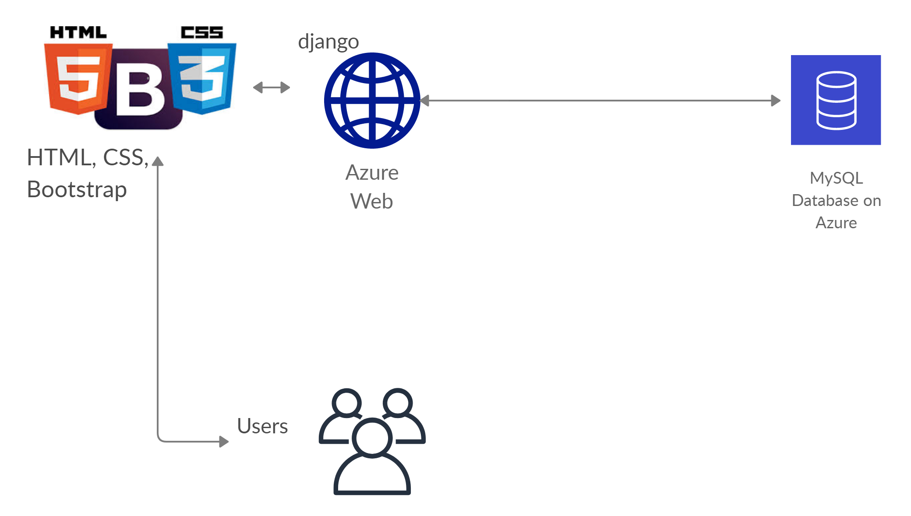

Web App - A
Database - MySQL; Web - Django, HTML, CSS, Bootstrap;

Details
For this configuration, you will require:
- Working knowledge about using Django
- GitHub Student Edition Pack or Microsoft Azure Student Credits
- Working knowledge in designing web pages using HTML, CSS, Django
Steps
- Go to the Azure portal, and deploy a 'Azure for MySQL database', and save the database details.
- Start your Django projects, and change database settings to MySQL, and configure host, username, password.
- Design your webpages in HTML, CSS, Bootstrap and configure them with the Django project.
- Deploy your Django project on Azure as a Web App.
Resources
Please watch the following YouTube tutorial by Telusko to get started with Django:
Django Telusko
You have a webapp up and running!